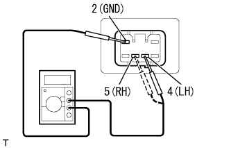

ヘッドランプ レベリング スイッチ 車上点検 |
| 1. ヘッドランプ レベリング スイッチ点検 |
電圧点検
|  |
SST(トヨタエレクトリカルテスター)を使用して、コネクターを接続した状態でコネクターの裏側より、ヘッドランプレべリングスイッチを操作したときのコネクター端子間の電圧を点検する。
| スイッチポジション | 端子番号(端子名) | 電圧(バッテリー電圧12V時) |
|---|---|---|
| 0 | 4(LH)および5(RH)←→2(GND) | 8.7-13.0V(10.4-11.2V) |
| 1 | 4(LH)および5(RH)←→2(GND) | 7.6-11.5V(9.2.-9.9V) |
| 2 | 4(LH)および5(RH)←→2(GND) | 6.6-10.0V(7.9-8.6V) |
| 3 | 4(LH)および5(RH)←→2(GND) | 5.5-8.5V(6.6-7.3V) |
| 4 | 4(LH)および5(RH)←→2(GND) | 4.4-7.0V(5.3-6.0V) |
| 5 | 4(LH)および5(RH)←→2(GND) | 3.4-5.6V(4.0-4.8V) |
照明バルブ点検
SST(トヨタエレクトリカルテスター)を使用して、コネクターの3(ILL+)←→6(ILL-)端子間の導通を点検する。